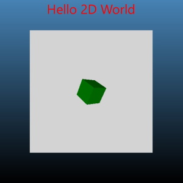
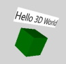
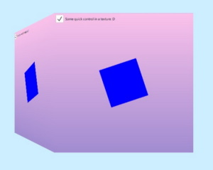
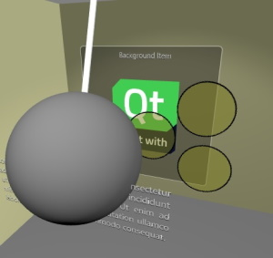
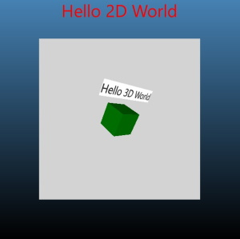

Qt Quick 3D Scenes with 2D Content
2D Items in a 3D World
Qt Quick 3D offers efficient creation and rendering of scenes that combine 3D and 2D elements.
What do we mean by a combined 3D-2D scene?
By nature, a View3D object, representing a 3D viewport in the 2D scene, can be easily combined with Qt Quick items, such as, Rectangle, Image, Text, around, below, or above the View3D item, which itself is a Qt Quick Item.
Consider the following example:
import QtQuick import QtQuick3D Rectangle { gradient: Gradient { GradientStop { position: 0; color: "steelblue" } GradientStop { position: 1; color: "black" } } Text { text: "Hello 2D World" font.pointSize: 32 color: "red" anchors.top: parent.top anchors.horizontalCenter: parent.horizontalCenter } Item { width: 400; height: 400 anchors.centerIn: parent View3D { anchors.fill: parent environment: SceneEnvironment { backgroundMode: SceneEnvironment.Color; clearColor: "lightGray" } PerspectiveCamera { z: 600 } DirectionalLight { } Model { source: "#Cube" materials: PrincipledMaterial { baseColor: "green"; metalness: 0.0; roughness: 0.0 } eulerRotation: Qt.vector3d(30, 45, 0) } } } }

Here the 3D scene is the area with gray background. The rest of the window consists of 2D Qt Quick items. These can overlap with the View3D but are not part of the 3D world, are not using the 3D coordinate system, and do not take part in the 3D scene's transformations.
What if we want to have 2D items within the 3D world, in a way that they truly participate in all 3D transforms? For example, can we have Rectangle and Text items placed within the 3D world, in a way that they follow the cube's rotation and are always placed above it?

In the following sections we will take a look at how this can be achieved. While the example uses Rectangle and Text, any Qt Quick content, including Qt Quick Controls, Shape, ShaderEffect, ParticleSystem, can be used this way.
Note: There are also other approaches available to integrate 2D content with the 3D objects. Adding 2D items to 3D nodes allows freely combining the 2D and 3D objects in the 3D world, but it does not allow rendering the 2D content on the surface of a 3D object. If the goal is to texture a 3D mesh with content generated by Qt Quick, use the sourceItem property of Texture instead.
| Qt Quick content used as a texture map | Qt Quick items in the 3D scene |
|---|---|
 |  |
Adding 2D Items to 3D Nodes
The key enabler is Object3D's ability to accept Item child objects, and treat them in a special way. Object3D is the base class for the Node type. This means that any Node, and also types like Model, accept Item children.
Starting with Qt 6.0, adding a 2D item to a 3D node no longer triggers rendering the 2D content into a OpenGL texture, Vulkan image, or similar. Rather, the default mode is to render the 2D items in-line with the rest of the 3D scene, in the same render pass. The 2D items have all 3D transformations applied. The transformations are inherited from the wrapping Node.
import QtQuick import QtQuick3D Rectangle { gradient: Gradient { GradientStop { position: 0; color: "steelblue" } GradientStop { position: 1; color: "black" } } Text { text: "Hello 2D World" font.pointSize: 32 color: "red" anchors.top: parent.top anchors.horizontalCenter: parent.horizontalCenter } Item { width: 400; height: 400 anchors.centerIn: parent View3D { anchors.fill: parent environment: SceneEnvironment { backgroundMode: SceneEnvironment.Color; clearColor: "lightGray" } PerspectiveCamera { z: 600 } DirectionalLight { } Model { Node { y: 150 Rectangle { anchors.horizontalCenter: parent.horizontalCenter color: "white" width: text3d.width height: text3d.height Text { id: text3d text: "Hello 3D World" font.pointSize: 32 } } } source: "#Cube" materials: PrincipledMaterial { baseColor: "green"; metalness: 0.0; roughness: 0.0 } eulerRotation: Qt.vector3d(30, 45, 0) } } } }

Compared to the first snippet, the Model node now has a child node, with a transform that places it somewhat above the cube's position. 150 is relative to the cube's center, in the 3D coordinate space.
Model {
Node {
y: 150
Then there is the Rectangle item. When adding it under a Node, the boundaries of the 3D and 2D world are crossed internally, but this remains transparent to the application designer. An invisible content item is generated automatically, allowing the Rectangle to refer to parent and perform anchoring. The 3D transform from the Node is applied to the entire 2D subtree. In the example this means that the rotation will match the cube's rotation.
Node {
y: 150
Rectangle {
anchors.horizontalCenter: parent.horizontalCenter
Coordinate Spaces in 2D and 3D
The 2D items continue to use Qt Quick's coordinate system: Y axis runs from top to bottom, and the units correspond to pixels. 3D nodes on the other hand use the 3D coordinate system: the Y axis points up, and the units correspond to centimeters, affected by the Camera's perspective projection.
The top item's top-left corner is placed at the Node's origin by default. This means that the top-level item in a 2D subtree will often want to specify an anchor, for example anchors.centerIn: parent, or, like in the example, anchoring the horizontal center to the parent' horizontal center, thus centering the 2D content horizontally over the 3D node.
Further Considerations
- While the 2D items are rended in-line with 3D objects, they do not participate in lighting, and will not be casting shadows.
- Clipping may not perform as expected and should be avoided. If clipping is essential to the design of 2D items, the application should make an explicit fall back to rendering to a texture. This can be achieved by adding
layer.enabled: trueto the top-levelItemunder the 3D node. - As of Qt 6.2, input is passed to the 2D items as necessary. Input from pointing devices must occur within the childrenRect of the declared Items.
- While adding a 2D item tree into the 3D scene is fairly cheap, excess amounts (hundreds or more) of 2D subtrees within the 3D scene should be avoided, because in large amounts this may lead to increased memory and graphics resource usage. Note that this refers to the number of separate Item subtrees under 3D nodes, not the total number of 2D items in those subtrees. For example, the QML snippet above contains only one 2D subtree.
See also Qt Quick 3D - Quick Items Example and QQuickItem::mapFromGlobal().